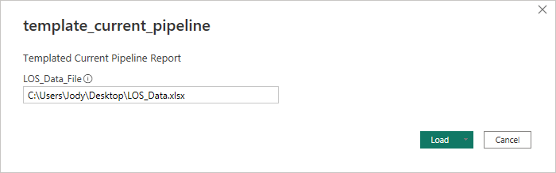

Current Pipeline
This report was designed to give insight into the current pipeline for your company. It differs from the other pipeline report as the date range selector focuses on ranges for only this year. As such many of the pages in this report are similar to the pipeline report but drops the same number of months look back data points. For each page you are presented with the current volume or units for the selected range and then that same period last year.
My hope is that this report is to provide much of the same data as the other pipeline report but with a focus view.
Dataset
Before opening the template please make sure to build out the Excel worksheet used as the Dataset for this template. Make sure that the fields are named exactly as they are listed below in the Field Name column and the sheet name in Excel is named Data.
Field Information
All these fields must be part of the dataset, if one of the fields listed is not something that is currently in your LOS then it is alright to use the same data point for the column. Example, if you don't have a field for your Branch name, then it would be ok to use a field like Branch Cost Center as the Branch data.
| Field Name | Field Description |
|---|---|
| Application Date | The date that a loan is considered an application |
| Branch | Field used for the name of the Branch |
| Clear To Close | The date the loan was clear to close |
| Closer | Closer's name |
| Decisioned Date | The date that the loan was decisioned |
| Extension Amount | The lock extension amount for the loan |
| Extension Percentage | The lock extension percentage amount for the loan |
| File Started Date | The date that the loan file was started |
| GUID | Unique identifier on a per loan bases |
| Loan Number | The loans loan number |
| Loan Officer | Loan Officer's name |
| Loan Purpose | The purpose of the loan such as Purchase, Refi, etc... |
| Loan Type | The type of loan such as Conventional, FHA, etc... |
| Lock Date | The date that the loan was locked |
| Processor | Processor's name |
| Property Type | The property type of the loan such as Primary, Investor, etc... |
| Sent to Processing | The date the loan was sent to processing |
| Submitted to Underwriting | The date the loan was submitted to underwriting |
| Total Loan Amount | The full loan amount |
| Underwriter | Underwriter's name |
These are the only required fields for the template to work correctly. If you want to expand your report to include other data points then you can add those fields in as long as they are not named the same as one of the columns above.
Note
This dataset uses many of the same filed as the other templates. It is possible to point the other templates at the same dataset to minimize the number of reports that need to be exported out of the LOS.
Using the template
Once you have your Excel file ready to go with the correct column headers and sheet name open the template_scorecards.pbit and you will be prompted for the file path to your Excel file. This file path must be the exact full path to the file. Example is if I have my Excel file saved to my desktop as LOS_Data.xlsx then the path I would type in is C:\Users\Jody\Desktop\LOS_Data.xlsx

Once the file path is typed in click load, your data will be imported and the report will open. From here you can customize the report by swapping out fields in visuals or possible changing measures or custom fields to better suit your companies work flow.
Report Pages
Pages on this report are intended to provide insight into the current pipeline for your branch and users. Pages in this report contain measures that provide insight into certain stages of the loan process. While your company may not have all these stages, it is my hope that this report can help you get started in building report that does follow your loan process by providing examples of how data is modeled and presented for use.
Note
Each page of this report has a Selected Range slicer that allows the user to focus on that range. Each range goes from the first of its respective time frame to today, with the exception of today which only includes data from today. Keep in mind that if you are at the beginning of a year or then it possible for the Month range to show the same numbers as the Quarter and/or Year.
Started
This page is designed to provide information on files that have Start date in the date range selected. It also provides a look at same period last year. On the Loan Officer table the arrows are used to tell if the Selected Range numbers are greater (green arrow), lesser (red arrow), or equal to (yellow bar) than the numbers from the same range last year.
The Loan Properties bar chart is designed to have the y axis driven off of the Loan Properties slicer to the left of it. For this page we can slice the properties for started loans by Loan Purpose, Loan Type and Property Type.
Applications
This page is designed to provide information on files that have Application date in the date range selected. It also provides a look at same period last year. On the Loan Officer table the arrows are used to tell if the Selected Range numbers are greater (green arrow), lesser (red arrow), or equal to (yellow bar) than the numbers from the same range last year.
The Loan Properties bar chart is designed to have the y axis driven off of the Loan Properties slicer to the left of it. For this page we can slice the properties for loans with an Application date by Loan Purpose, Loan Type and Property Type.
Locked
This page is designed to provide information on files that have Lock date in the date range selected. It also provides a look at same period last year. On the Loan Officer table the arrows are used to tell if the Selected Range numbers are greater (green arrow), lesser (red arrow), or equal to (yellow bar) than the numbers from the same range last year.
The Loan Properties bar chart is designed to have the y axis driven off of the Loan Properties slicer to the left of it. For this page we can slice the properties for loans with an Lock date by Loan Purpose, Loan Type, Property Type, and Lock Extension.
Processing
This page is designed to provide information on files that have Sent to Processing date in the date range selected. It also provides a look at same period last year. On the Processor table the arrows can be used to tell if the Selected Range numbers are greater (green arrow), lesser (red arrow), or equal to (yellow bar) than the numbers from the same range last year.
The Loan Properties bar chart is designed to have the y axis driven off of the Loan Properties slicer to the left of it. For this page we can slice the properties for loans with an Sent to Processing date by Loan Purpose, Loan Type and Property Type.
Underwriting
This page is designed to provide information on files that have Submitted to Underwriting date in the date range selected. It also provides a look at same period last year. On the Underwriter table the arrows can be used to tell if the Selected Range numbers are greater (green arrow), lesser (red arrow), or equal to (yellow bar) than the numbers from the same range last year.
The Loan Properties bar chart is designed to have the y axis driven off of the Loan Properties slicer to the left of it. For this page we can slice the properties for loans with an Submitted to Underwriting date by Loan Purpose, Loan Type and Property Type.
Closing
This page is designed to provide information on files that have Clear To Close date in the date range selected. It also provides a look at same period last year. On the Closer table the arrows can be used to tell if the Selected Range numbers are greater (green arrow), lesser (red arrow), or equal to (yellow bar) than the numbers from the same range last year.
The Loan Properties bar chart is designed to have the y axis driven off of the Loan Properties slicer to the left of it. For this page we can slice the properties for loans with an Clear To Close date by Loan Purpose, Loan Type and Property Type.
Customization Options
Refine Today Measures
Currently all the measures that deal with the Today range all work off of just the day as today. This may cause some issues with the last year measures as there will be sometimes where today last year fell on a weekend. To get around this you could change the Today to be same business day last year. This way you are comparing no so much the acutal day but the day of business instead.
Today and Power BI Servcie
Due to how the Power BI Service calculates the Today() DAX expression a custom measure found in the Measures Table\Utility Measures folder called _correctdToday has been setup. This measure allows you to adjust the measures that display a value based on today, to match your timezone. Why this is used instead of just the Today() DAX is because of the Power BI service, when using the default is Today() it uses the local system settings of your maching running Power BI desktop to know when Today() is. If you were to publish this report the Power BI Service Today() now uses UTC time which can cause an issue where where you end up tomorrow hour before its actually tomorrow. To resolve thsi adjust #/24 part of the _correctdToday to match your current timezone which then allows both Power BI Desktop and the Power BI Service to display Today as expected.